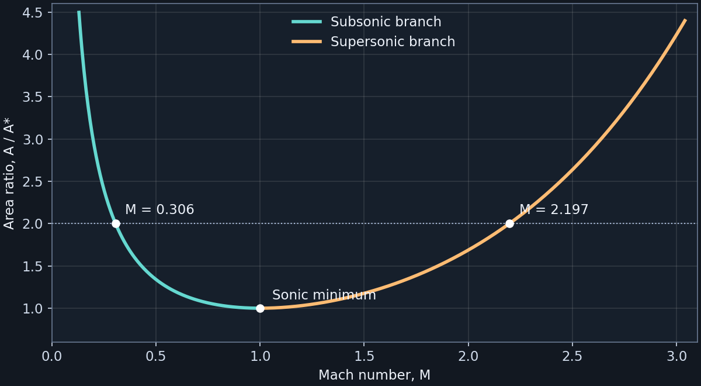

Chapter 22 · Lectures 67–69
Nozzle geometry, choking, and back pressure
Derive the area–Mach relation and determine how back pressure selects among nozzle flow regimes.
An air reservoir supplies a duct with a converging entrance, a rounded throat, and a diverging outlet. At high exhaust pressure the diverging section slows the air. Once the throat is sonic, the same section can accelerate air to supersonic speed. Geometry alone cannot determine which result the test stand delivers. The reservoir state and exit boundary select the branch.
Geometry enters the continuity equation Part 7 · 4:40
Let \(A\) be area normal to the stream, \(C\) axial speed, \(\rho\) mass density, and \(p\) absolute pressure. A quasi-one-dimensional model treats these flow quantities as nearly uniform on each cross section and lets them vary along the axis. Use steady, adiabatic, inviscid flow with negligible shaft work and gravity. In smooth flow entropy is constant. The resulting energy equation is \(dh+C\,dC=0\), where \(h\) is specific enthalpy in J/kg. The thermodynamic identity \(dh=T\,ds+dp/\rho\) therefore gives \(dp=-\rho C\,dC\) on a smooth isentropic segment.
With \(\dot m=\rho C A\) constant, differentiate its logarithm to obtain \(d\rho/\rho+dC/C+dA/A=0\). Substituting \(d\rho=dp/a^2\) with \(a^2=(\partial p/\partial\rho)_s\) gives
\[ \frac{dA}{A}=(M^2-1)\frac{dC}{C},\qquad M=C/a. \]
For \(M<1\) a decreasing area accelerates the fluid. For \(M>1\) the derivative has the opposite sign. The relation holds for a real-fluid isentrope with a suitable acoustic speed. It does not apply across a shock. At a sonic section with finite derivatives, \(dA=0\). A smooth transition between the two branches requires a local minimum of area in the ideal-gas model. The geometric minimum can also have subsonic velocity if the downstream load never demands enough flow to reach \(M=1\). Part 7 · 10:00
Derive the area–Mach relation Part 7 · 21:40
For ideal air with constant specific heat ratio \(\gamma\) and specific gas constant \(R\), use the stagnation pressure \(p_t\) and temperature \(T_t\) of the smooth segment. The static temperature is \(T=T_t/[1+(\gamma-1)M^2/2]\). The pressure is \(p=p_t(T/T_t)^{\gamma/(\gamma-1)}\). Combining these with \(\rho=p/(RT)\) and \(C=M\sqrt{\gamma RT}\) gives
\[ \frac{\dot m}{A} =\frac{p_t}{\sqrt{T_t}}\sqrt{\frac{\gamma}{R}}\, M\left(1+\frac{\gamma-1}{2}M^2\right)^{-(\gamma+1)/(2(\gamma-1))}. \]
At fixed \(p_t,T_t\), the logarithmic derivative of the Mach-dependent factor equals \((1-M^2)/[M(1+(\gamma-1)M^2/2)]\). It changes sign at \(M=1\), giving a maximum mass flux there. Let \(A^*\) denote the area that would carry the same mass flow at Mach 1 on this isentrope, even when such a section is hypothetical. Dividing the sonic mass flux by the flux at \(M\) gives
\[ \frac{A}{A^*}=\frac{1}{M} \left[\frac{2+(\gamma-1)M^2}{\gamma+1}\right]^{(\gamma+1)/(2(\gamma-1))}. \]
With \(\gamma=1.4\) and \(A/A^*=2\), the two Mach roots are 0.30590 and 2.19720. Their static pressures are respectively 0.93716 and 0.09393 times \(p_t\). Once the actual throat is sonic, its area \(A_t\) equals \(A^*\) for the upstream isentrope. With fixed upstream total state, the mass flow is choked and further lowering back pressure cannot increase it. The choked mass flux at \(p_t=300\) kPa and \(T_t=300\) K is 700.07 kg/(m² s) for \(R=287\) J/(kg K). NASA Glenn, mass flow choking

Select the operating regime of a convergent nozzle Part 8 · 0:00
Let \(p_b\) denote the back pressure imposed by the receiving region, and \(p_e\) the exit static pressure. A convergent nozzle with a subsonic reservoir-fed stream initially runs subsonic. In the one-dimensional model \(p_e=p_b\). Lowering \(p_b\) increases \(\dot m\) until sonic speed occurs at the outlet. The critical pressure ratio is
\[ \frac{p^*}{p_t}=\left(\frac{2}{\gamma+1}\right)^{\gamma/(\gamma-1)}. \]
For \(\gamma=1.4\) this ratio is 0.52828, so with \(p_t=300\) kPa the first sonic outlet is at 158.48 kPa. At a still lower back pressure the exit remains sonic and \(p_e=p^*>p_b\). The jet is underexpanded and adjusts outside the nozzle. Alternating regions of expansion and compression can form a visible shock-cell pattern. Varying \(p_t\) at fixed \(p_b\) also drives the flow through these regimes, but even in the choked state the mass-flow formula continues to depend on the changed upstream \(p_t/\sqrt{T_t}\). Part 8 · 12:00
Select the branch in a convergent–divergent nozzle Part 9 · 0:00
At first choking, the throat is sonic and the divergent segment follows the subsonic root. The pressure there rises from the throat to the exit as velocity falls. With \(A_e/A_t=2\) this gives \(p_b/p_t=0.93716\), exceeding the throat pressure ratio 0.52828. A model that applies the convergent nozzle's critical ratio to the downstream boundary of this geometry would select the wrong operating point.
When the back pressure falls below the first-choking value, one steady idealized solution accelerates beyond the throat, then crosses a normal shock, and leaves subsonically. The shock raises static pressure and lowers stagnation pressure. As back pressure falls further, it moves downstream until it reaches the exit. With the divergent section entirely supersonic, the ideal exit state follows the supersonic root for \(A_e/A_t\). At \(A_e/A_t=2\) it gives \(p_e/p_t=0.09393\). The jet is overexpanded when \(p_e<p_b\), correctly expanded when the two agree, and underexpanded when \(p_e>p_b\). Strongly overexpanded nozzles can separate from the wall, making a uniform one-dimensional exit and planar shock poor approximations. Part 9 · 4:40 · Part 9 · 16:40
Numerical laboratory
The Python laboratory inverts \(A/A^*\) on either branch by bracketing and bisection. It checks that substituting each root returns the requested area ratio and that both branches coincide at \(A/A^*=1\). It also computes the critical pressure ratio and the choked mass flux in SI units. This model describes local equilibrium air with constant specific heats and smooth isentropic segments.
Problems with worked solutions
Predict the speed change without solving for it
A nozzle wall turns outward locally. Classify the effect on \(C\) at \(M=0.6\) and \(M=1.6\) before any shock.
Show solution
Solution. The area increment is positive. For \(M=0.6\), \(M^2-1<0\), requiring \(dC<0\). For \(M=1.6\) it is positive, requiring \(dC>0\). The supersonic stream accelerates as the cross section grows because density decreases enough to preserve mass flux.
Use the throat as a flow meter
A sonic throat at the 300 kPa, 300 K supply state has an area of \(1.00\,\mathrm{cm^2}\). Find its mass flow.
Show solution
Solution. Convert area to \(10^{-4}\,\mathrm{m^2}\) and multiply by the sonic mass flux, giving \(0.07001\) kg/s. Halving the throat area at fixed inlet total state halves the choked mass flow in this model.
Compare two critical pressures
For \(A_e/A_t=2\) and \(p_t=300\) kPa calculate the convergent–divergent nozzle's exit pressure at first choking. Compare with a convergent nozzle at the same supply pressure.
Show solution
Solution. In the first case the throat is sonic and the subsonic exit root gives \(p_e=300(0.93716)\approx281.15\) kPa. The convergent exit is itself the throat and gives \(p_e=300(0.52828)=158.48\) kPa. The divergence allows the subsonic stream to decelerate after the geometric throat and recover part of its static pressure.
Determine the sign of the plume pressure adjustment
An isentropic supersonic exit at \(A_e/A_t=2\) discharges to an ambient pressure equal to \(0.05p_t\). What adjustment is required?
Show solution
Solution. The exit pressure \(0.09393p_t\) exceeds the ambient pressure. The jet is underexpanded and initially needs to expand. It adjusts through multidimensional waves, so the downstream jet cannot be modeled as a constant-area one-dimensional extension of the nozzle.